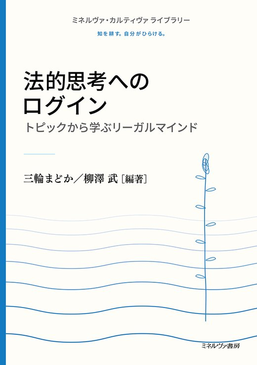
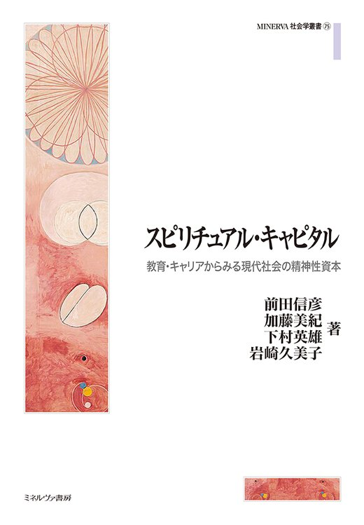

担当書籍
刊行（2026年～）


近刊
 変容と微睡——デカルト道徳哲学の射程三上航志［著］｜2026年12月刊行予定→
変容と微睡——デカルト道徳哲学の射程三上航志［著］｜2026年12月刊行予定→
ミネルヴァ・カルティヴァ ライブラリー法的思考へのログイン――トピックから学ぶリーガルマインド三輪まどか・柳澤武［編著］→
スピリチュアル・キャピタル――教育・キャリアからみる現代社会の精神性資本前田信彦・加藤美紀・下村英雄・岩崎久美子［著］→
シリーズ
準備中
- ミネルヴァ・カルティヴァ ライブラリーしくみが見える憲法学——日常の憲法問題を掘り起こす詳細後日
- ミネルヴァ・カルティヴァ ライブラリーしくみが見える法学——くらしに法を透かし見る詳細後日
- ミネルヴァ・カルティヴァ ライブラリーしくみが見える企業法——会社に関するルールとは詳細後日
- ミネルヴァ・カルティヴァ ライブラリーしくみが見える経済学——身の回りから大局へ詳細後日
- ミネルヴァ・カルティヴァ ライブラリースポーツと健康を科学する詳細後日
- ミネルヴァ・カルティヴァ ライブラリースポーツ社会学をひらく詳細後日
- ミネルヴァ・カルティヴァ ライブラリーアントレプレナーシップを科学する――起業を身近に考える詳細後日
その他準備中